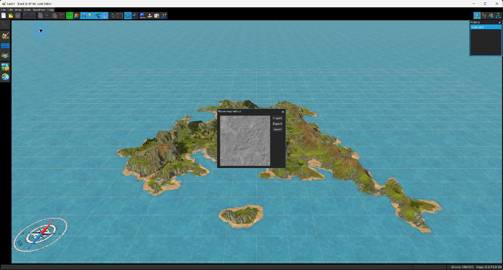

El código fuente proporcionado expone varios recursos auxiliares del terreno y herramientas de mantenimiento en lugar de un único pincel de “detalles del terreno”.

muestra la noise map actual y permite importar PNG, exportar PNG e invertir. El Editor de regiones puede superponer este mapa en la vista previa de la región.
ofrece el mismo flujo de importación/exportación/inversión para el recurso bump de costa.
El menú Herramientas puede abrir visores de solo lectura para la small bump texture y la textura del cielo.
recalcula la información de sombras del terreno. Las operaciones de esculpido también actualizan las sombras de los bloques modificados por el trazo.